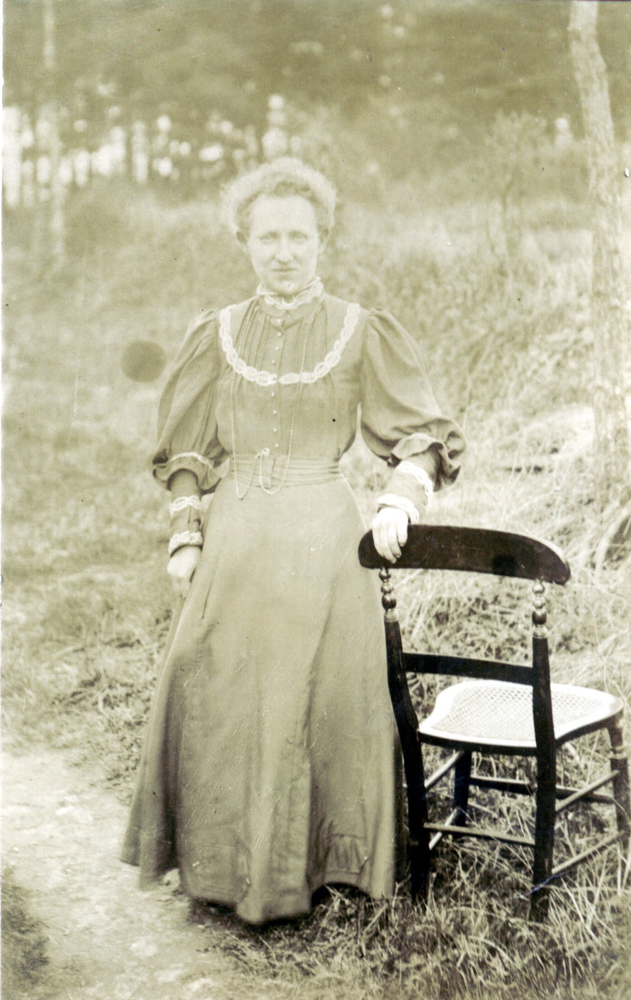
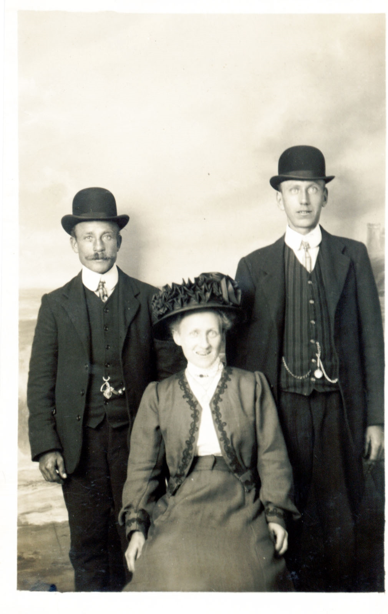
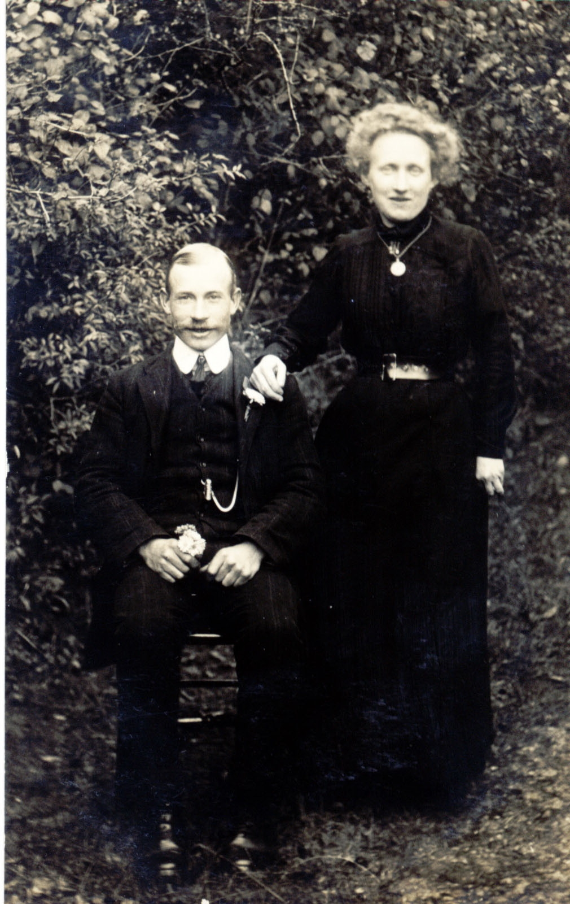
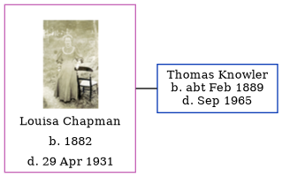

Louisa Knowler (née Chapman) 1882 - 1931
[ Home ] | [ Calendar ] | [ Surnames Index ] | [ Errors ] | [ Family History ]Louisa Chapman, the wife of Thomas William Knowler (the first cousin twice-removed on the mother's side of Nigel Horne), was born in Northbourne, Kent, England in 18821,2,3,4,5. She married Thomas in Betteshanger, Kent, England on 18 Aug 19156.
During her life, she was living at her birthplace in 18911 and in 19012 and in Betteshanger on 2 Apr 19113.
She died on 29 Apr 1931 in Eastry, Kent, England4.
Citations
- 1891 England Census Online publication - Provo, UT, USA: The Generations Network, Inc., 2005.Original data - Census Returns of England and Wales, 1891. Kew, Surrey, England: The National Archives of the UK (TNA): Public Record Office (PRO), 1891. Data imaged from The National (Relation to Head of House: Daughter)
- 1901 England Census Online publication - Provo, UT, USA: The Generations Network, Inc., 2005.Original data - Census Returns of England and Wales, 1901. Kew, Surrey, England: The National Archives of the UK (TNA): Public Record Office (PRO), 1901. Data imaged from the National (Relation to Head of House: Daughter)
- 1911 England Census Online publication - Provo, UT, USA: Ancestry.com Operations, Inc., 2011.Original data - Census Returns of England and Wales, 1911. Kew, Surrey, England: The National Archives of the UK (TNA), 1911. Data imaged from the National Archives, London, England. (Marital Status: Single; Relation to Head of House: Daughter)
- England & Wales, Death Index: 1984-2005 Online publication - Provo, UT, USA: The Generations Network, Inc., 2007.Original data - General Register Office. England and Wales Civil Registration Indexes. London, England: General Register Office. © Crown copyright. Published by permission of the Cont
- England & Wales, FreeBMD Birth Index, 1837-1915 Online publication - Provo, UT, USA: The Generations Network, Inc., 2006.Original data - General Register Office. England and Wales Civil Registration Indexes. London, England: General Register Office. © Crown copyright. Published by permission of the Cont
- England & Wales, FreeBMD Marriage Index: 1837-1915 Online publication - Provo, UT, USA: The Generations Network, Inc., 2006.Original data - General Register Office. England and Wales Civil Registration Indexes. London, England: General Register Office. © Crown copyright. Published by permission of the Cont
Media
Louisa Chapman

Thomas Knowler - Louise Chapman

Thomas Knowler - Louisa Champan 2

England & Wales births 1837-2006 Transcription - BMD-B-1882-1-AZ-000101-363
England & Wales deaths 1837-2007 Transcription - BMD-D-1931-2-AZ-000524-070
Family Tree
Map
Generated by ged2site. Last updated on Jul 3, 2024
Known Issues
No records of living with anyone